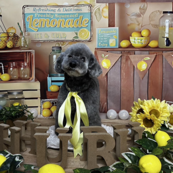

私自身を知っていただくために、趣味や愛犬との日々をご紹介します。
愛犬 華との出会い
以前、華との出逢いを漫画にしてもらいました。
毎月増える宝物

トリミングに行くとかわいいフォトスタジオで 毎回撮影してくれます。
愛犬・華との出会いを通して
私の愛犬・華は、かつて「繁殖犬」として劣悪な環境で過ごしていました。
狭いケージの中で光を見ることもなく、繰り返し出産を強いられる日々。引き取った当初は痩せ細り、表情も消えていました。
そんな華が、今では安心して私のそばで眠るようになった姿は、時間と信頼がもたらす変化の大きさを教えてくれました。
日本には、まだ多くの犬たちが同じような状況に置かれています。この現実を、少しでも知っていただけたら嬉しく思います。
引き取った当初の華
かぎ針編み作品
主に、犬用ニット帽をメインに編んでいます。
モデルはもちろん愛犬の華。
お友達に頼まれて作ることもあります。
犬友達で編み物に興味のある方と一緒に編み物会を開催。
ドッグカフェや自宅で行うのでもちろんわんちゃんも同伴。
お膝に抱っこしたまま編み物をしたり、編みながらボールなげたり、わんちゃんが退屈しないようにノーズワークを設置するなど工夫しています。
大好きなわんちゃんに囲まれて編み物をするしあわせ空間です！
憧れのフルート
大人になってからフルートを習い始めました。最初は思うように音が出ず、指使いもぎこちなくて戸惑うこともありましたが、レッスンを重ねるうちに少しずつ音色を楽しめるようになり、フルートの世界にどんどん惹かれていきました。
数年前には、ついに自分のフルートを購入。リッププレートに入った繊細な彫刻がとても気に入っていて、手にするたびに特別な気持ちになります。
お気に入りの楽器があると、練習へのモチベーションもぐんと上がり、もっともっとフルートが大好きになりました。
今では、自分のペースで好きな曲を練習して楽しんでいます。音を奏でる時間は、心が穏やかになる大切なひとときです。